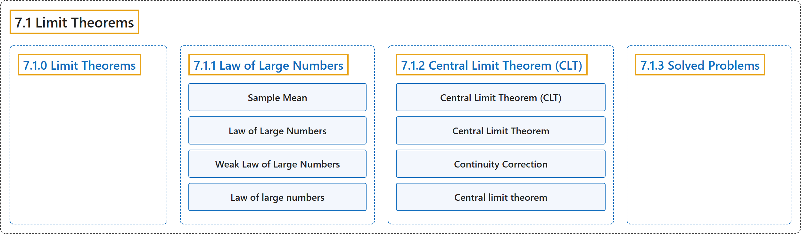

7.1 Limit Theorems
Classification

Glossary
| Term | Definition | 中文翻译 | Source |
|---|---|---|---|
| 7.1 Limit Theorems 极限定理 |
(No definition) | （无定义） | Pishro-Nik, 2014, section 7.1 |
| 7.1.0 Limit Theorems 极限定理 |
(No definition) | （无定义） | Pishro-Nik, 2014, section 7.1.0 |
| 7.1.1 Law of Large Numbers 大数定律 |
(No definition) | （无定义） | Pishro-Nik, 2014, section 7.1.1 |
| Sample Mean 样本均值 |
"For i.i.d. random variables \(X_1, X_2,..., X_{\large n}\), the sample mean, denoted by \(\overline{X}\), is defined as" | 对于独立同分布随机变量 \(X_1, X_2,..., X_{\large n}\)，样本均值记为 \(\overline{X}\)，定义为 | Pishro-Nik, 2014, section 7.1.1 |
| Law of Large Numbers 大数定律 |
"The law of large numbers has a very central role in probability and statistics. It states that if you repeat an experiment independently a large number of times and average the result, what you obtain should be close to the expected value." | 大数定律在概率论与统计学中处于非常核心的地位。它指出，如果独立重复一个试验很多次并对结果取平均，所得结果应当接近期望值。 | Pishro-Nik, 2014, section 7.1.1 |
| Weak Law of Large Numbers 弱大数定律 |
"Now let us state and prove the weak law of large numbers (WLLN)." | 现在我们来陈述并证明弱大数定律（WLLN）。 | Pishro-Nik, 2014, section 7.1.1 |
| Law of large numbers 大数定律 |
"A 'law of large numbers' is one of several theorems expressing the idea that as the number of trials of a random process increases, the percentage difference between the expected and actual values goes to zero." | “大数定律”是若干定理之一，它们表达这样一个想法：随着随机过程的试验次数增加，期望值与实际值之间的百分比差异趋于零。 | Weisstein, n.d.-b, "Law of large numbers" entry, para. 1 |
| 7.1.2 Central Limit Theorem (CLT) 中心极限定理（CLT） |
(No definition) | （无定义） | Pishro-Nik, 2014, section 7.1.2 |
| Central Limit Theorem (CLT) 中心极限定理 |
"The Central Limit Theorem (CLT) Let \(X_1\),\(X_2\),...,\(X_{\large n}\) be i.i.d. random variables with expected value \(EX_{\large i}=\mu <\infty\) and variance \(0<\mathrm{Var}(X_{\large i})=\sigma^2 < \infty\)." | 中心极限定理（CLT） 设 \(X_1\),\(X_2\),...,\(X_{\large n}\) 为独立同分布随机变量，期望 \(EX_{\large i}=\mu <\infty\)，方差 \(0<\mathrm{Var}(X_{\large i})=\sigma^2 < \infty\)。 | Pishro-Nik, 2014, section 7.1.2 |
| Central Limit Theorem 中心极限定理 |
"The central limit theorem (CLT) is one of the most important results in probability theory. It states that, under certain conditions, the sum of a large number of random variables is approximately normal." | 中心极限定理（CLT）是概率论中最重要的结果之一。它指出，在一定条件下，大量随机变量之和近似服从正态分布。 | Pishro-Nik, 2014, section 7.1.2 |
| Continuity Correction 连续性修正 |
"Here is a trick to get a better approximation, called continuity correction." | 这里有一个得到更好近似的技巧，称为连续性修正。 | Pishro-Nik, 2014, section 7.1.2 |
| Central limit theorem 中心极限定理 |
"The central limit theorem states that the normalized sum of independent random variates with finite variances approaches a normal distribution." | 中心极限定理指出，方差有限的独立随机变量经标准化后的和会趋近于正态分布。 | Weisstein, n.d.-a, "Central limit theorem" entry, para. 1 |
| 7.1.3 Solved Problems 例题详解 |
(No definition) | （无定义） | Pishro-Nik, 2014, section 7.1.3 |
References
Pishro-Nik, H. (2014). Introduction to probability, statistics, and random processes. Kappa Research. Retrieved October 28, 2026, from https://www.probabilitycourse.com/
Weisstein, E. W. (n.d.-b). Law of large numbers. MathWorld: A Wolfram Resource. Retrieved October 27, 2026, from https://mathworld.wolfram.com/LawofLargeNumbers.html
Weisstein, E. W. (n.d.-a). Central limit theorem. MathWorld: A Wolfram Resource. Retrieved October 27, 2026, from https://mathworld.wolfram.com/CentralLimitTheorem.html